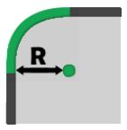

Esta función permite al operador añadir un empalme al vértice o al lado de la pieza.
La interfaz de esta función presenta un aspecto similar a la siguiente imagen:

Parámetros
 | Vértice individual |
 | Lado |
 | Vértices del polígono |
Parámetros de vértice individual/polígono
 | Radio R |
Parámetros «Lado»
 | Offset 0 |
Ejecución del mecanizado
Es posible aplicar el mecanizado pulsando el botón situado a la izquierda del corte correspondiente en la lista de polígonos.
Un icono rojo con una «X» indica que el mecanizado no puede aplicarse al corte deseado.
A continuación se muestra la aplicación de los empalmes en los distintos modos. Una vista previa del mecanizado permite al operador visualizar el resultado previsto. El mecanizado se aplicará realmente solo después de confirmarlo mediante el botón verde «OK».
!
Cada empalme aplicado provoca la pérdida de los ajustes de corte definidos anteriormente.
Ejecución en vértice individual
Al seleccionar este modo, el mecanizado podrá ejecutarse en los vértices individuales de la pieza.
Para que el mecanizado se aplique correctamente, no es posible configurar un valor negativo para el parámetro radio .
En el ejemplo se aplican tres empalmes con un radio de 100,0 mm.

En la lista de cortes de la izquierda se producen algunas consecuencias cada vez que se aplica un empalme en un vértice:
se eliminan los demás mecanizados;
Se inserta una curva en la lista, correspondiente al nuevo empalme.
la longitud de los lados adyacentes se reduce en una medida igual al radio.
Ejecución en lado
Al seleccionar este modo, el mecanizado puede ejecutarse en los lados de la pieza. En este modo, los empalmes presentan dos casos principales según el valor del parámetro offset: un valor positivo y un valor negativo.
En la siguiente imagen de ejemplo se ha aplicado un empalme al corte inferior de la pieza seleccionada, con el parámetro offset configurado en 100,0 mm.

La siguiente imagen muestra el ejemplo opuesto al caso anterior: se ha aplicado un empalme al corte inferior de la pieza seleccionada, con el parámetro offset configurado en un valor negativo de -100mm.

En la lista de cortes de la izquierda se producen algunas consecuencias cada vez que se aplica un empalme en un lado:
se eliminan los demás mecanizados;
El corte de tipo línea seleccionado se sustituye por un corte curvo.
Con un valor positivo del parámetro offset, el empalme insertado estará formado por una curva entrante respecto al polígono seleccionado, ya sea interior o exterior.
Por el contrario, con un valor de offset negativo, el empalme aplicado estará formado por una curva saliente respecto al polígono seleccionado.
Ejecución en vértices del polígono
El empalme se aplica a todos los vértices del polígono.
Para que el mecanizado se complete correctamente, no es posible introducir un valor de radio negativo.
En la siguiente imagen se muestra el mecanizado aplicado a todos los vértices de la pieza:

De forma análoga al modo de vértices individuales, al utilizar este modo se producen algunas consecuencias en la lista de cortes de la izquierda:
se eliminan los demás mecanizados;
El corte de tipo línea seleccionado se sustituye por un corte curvo.
Con un valor positivo del parámetro offset, el empalme insertado estará formado por una curva entrante respecto al polígono seleccionado, ya sea interior o exterior.
Por el contrario, con un valor de offset negativo, el empalme aplicado estará formado por una curva saliente respecto al polígono seleccionado.